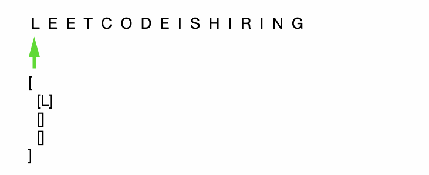

Leetcode 6. Z字形变换¶
题目描述¶
将一个给定字符串根据给定的行数，以从上往下、从左到右进行 Z 字形排列。
比如输入字符串为 “LEETCODEISHIRING” 行数为 3 时，排列如下：
L C I R
E T O E S I I G
E D H N
之后，你的输出需要从左往右逐行读取，产生出一个新的字符串，比如：”LCIRETOESIIGEDHN”。
请你实现这个将字符串进行指定行数变换的函数：
string convert(string s, int numRows);
示例 1:
输入: s = "LEETCODEISHIRING", numRows = 3
输出: "LCIRETOESIIGEDHN"
示例 2:
输入: s = "LEETCODEISHIRING", numRows = 4
输出: "LDREOEIIECIHNTSG"
解释:
L D R
E O E I I
E C I H N
T S G
思路¶
模拟字符串的排列。
第一步：创建一个包含 numRows 个元素的列表，每个元素又是一个列表，用来存储对应行的字符。
第二步：模拟字符串排序，将每个字符串放入对应的列表（即对应的行）
第三步：拼接处最终结果
示例：
输入: s = “LEETCODEISHIRING”, numRows = 3
代码¶
1 2 3 4 5 6 7 8 9 10 11 12 13 14 15 16 17 18 19 20 21 22 23 24 25 26 27 28 29 30 | def convert(selfs, s, numRows):
# 只有1行直接返回原字符串
if numRows == 1:
return s
# 构造一个numRows元素的列表，每个元素存储转换后的一行
container = []
while numRows > 0:
container.append([])
numRows -= 1
# 定义遍历指针
rowIndex = 0
# 标记位（在第0行和第n-1行需要换方向）
flag = -1
# 逐个字符遍历，放进相应的行
for ch in s:
container[rowIndex].append(ch)
if rowIndex == 0 or rowIndex == len(container) - 1:
flag *= -1
rowIndex += flag
# 拼接成最后结果
ans = ''
for item in container:
ans += ''.join(item)
return ans
|
来源：力扣（LeetCode）
链接：https://leetcode-cn.com/problems/zigzag-conversion
著作权归领扣网络所有。商业转载请联系官方授权，非商业转载请注明出处。